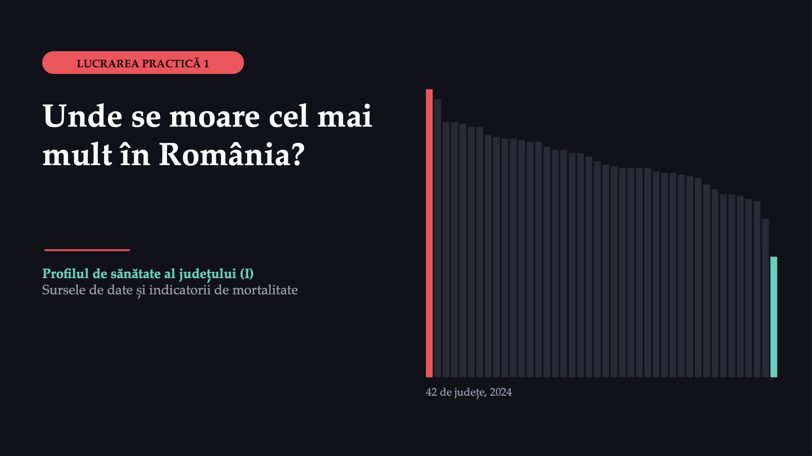
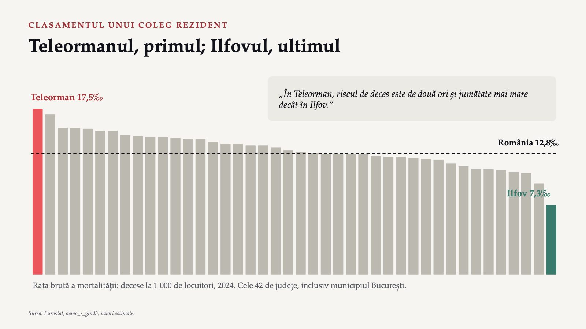
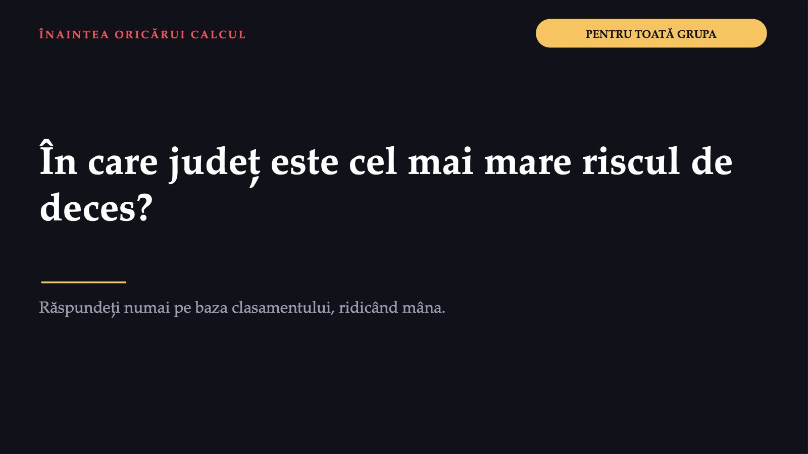
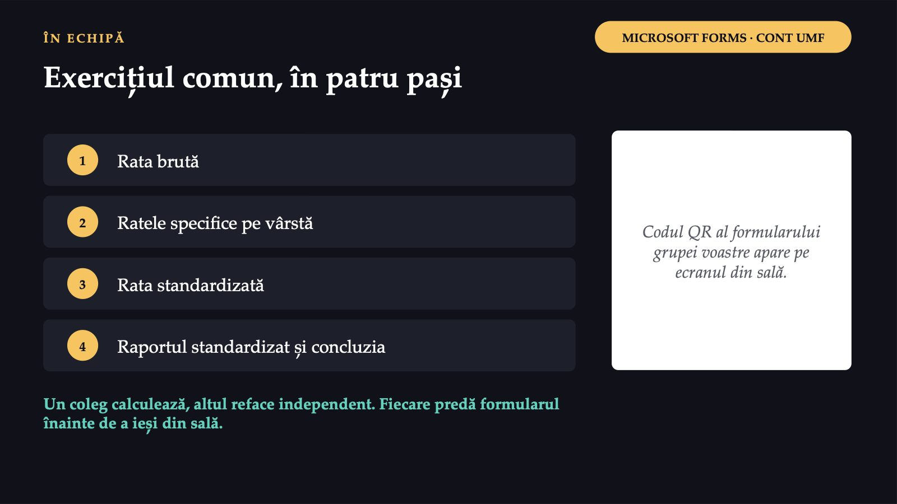
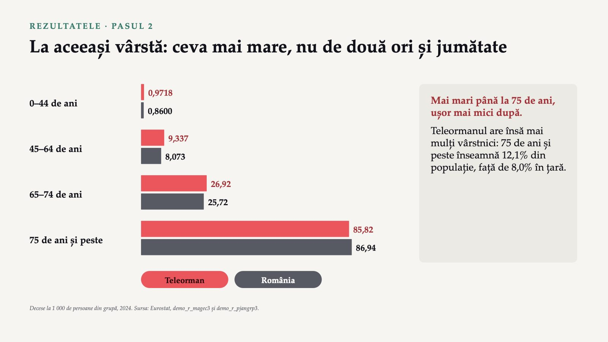
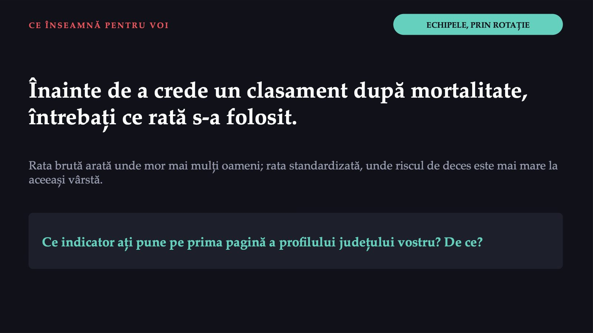
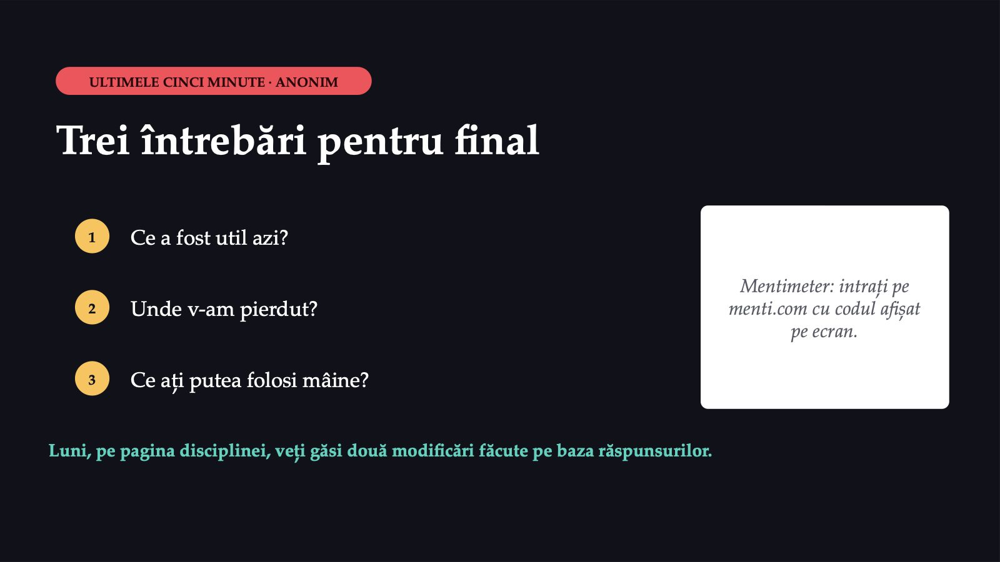

Unde se moare cel mai mult în România?

1 / 14Teleormanul, primul; Ilfovul, ultimul

2 / 14În care județ este cel mai mare riscul de deces?

3 / 14Unde se găsesc decesele și populația unui județ
![SURSELE DATELOR Unde se găsesc decesele și populația unui județ Eurostat demo_r_magec3: decesele pe grupe de vârstă de cinci ani demo_r_pjangrp3: populația la 1 ianuarie, pe aceleași grupe demo_r_gind3: rata brută publicată Filtrați pe un județ (regiune NUTS 3). INS, baza TEMPO POP206K: decedații cu reședința obișnuită în România POP106A: populația rezidentă la 1 iulie Citiți întâi fișa de metadate a matricei. Pe ecran: demonstrația. Voi nu descărcați nimic; fiecare echipă primește fișierul Excel al județului ei. Surse: ec.europa.eu/eurostat/databrowser · statistici.insse.ro:8077/tempo-ins](diapozitive/LP01/004.jpg) 4 / 14
4 / 14Trei verificări
![ÎNAINTEA ORICĂREI COMPARAȚII Trei verificări 1 Aceiași oameni sus și jos? Decesele și populația pe aceeași bază: adresa din buletin sau locul unde omul locuiește de fapt. 2 Aceeași definiție pe toată seria? Decesele: de la 2014, după locul unde omul locuiește. Populația: în Teleorman, cei de 90 de ani și peste scad de la 4 055 la 2 512 între 2021 și 2022, fără explicație. 3 Ultimul an și marcajele lui? 2024: populația marcată „e”, adică estimată; anii recenți se pot revizui. Notați data descărcării. Autocontrolul: 5 495 ÷ 314 259 × 1 000 = 17,49, adică exact valoarea publicată pentru Teleorman.](diapozitive/LP01/005.jpg) 5 / 14
5 / 14Județul vostru, până la ultima lucrare practică
![ECHIPELE ȘI JUDEȚELE Județul vostru, până la ultima lucrare practică Grupa 9 Alba, Buzău, Gorj, Neamț, Suceava Grupa 10 Arad, Caraș-Severin, Harghita, Olt, Timiș Grupa 11 Argeș, Călărași, Hunedoara, Prahova, Tulcea Grupa 12 Bacău, Cluj, Ialomița, Satu Mare, Vaslui Grupa 13 Bihor, Constanța, Iași, Sălaj, Vâlcea Grupa 14 Bistrița-Năsăud, Covasna, Maramureș, Sibiu, Vrancea Grupa 15 Botoșani, Dâmbovița, Mehedinți, Brașov, Galați Grupa 16 Brăila, București, Dolj, Giurgiu, Mureș Grupa 17 Cluj, Tulcea, Vâlcea, Botoșani, Timiș Grupa 18 București, Brăila, Iași, Covasna, Hunedoara Grupa 19 Constanța, Dolj, Bistrița-Năsăud, Olt, Sibiu Grupa 20 Brașov, Suceava, Călărași, Mehedinți, Harghita Fișierul echipei: LP01_<Județ>.xlsx, fără diacritice (de exemplu LP01_Bistrita-Nasaud.xlsx), pe e-mailul instituțional sau pe Teams. Teleorman și Ilfov rămân exemplul comun.](diapozitive/LP01/006.jpg) 6 / 14
6 / 14Teleorman, Ilfov și România, 2024
![DATELE EXERCIȚIULUI COMUN Teleorman, Ilfov și România, 2024 Teleorman · Ilfov · România Grupa de vârstă · decese · populația medie · decese · populația medie · decese · populația medie 0–44 de ani · 133 · 136 855 · 180 · 354 080 · 8 453 · 9 829 314 45–64 de ani · 882 · 94 462 · 897 · 160 335 · 43 484 · 5 386 457 65–74 de ani · 1 206 · 44 792 · 1 069 · 50 636 · 59 305 · 2 305 994 75 de ani și peste · 3 274 · 38 150 · 2 163 · 28 913 · 133 333 · 1 533 599 Total · 5 495 · 314 259 · 4 309 · 593 964 · 244 575 · 19 055 364 Sursa: Eurostat, demo_r_magec3 și demo_r_pjangrp3; populația medie a anului (media populației de la 1 ianuarie 2024 și 1 ianuarie 2025), estimată.](diapozitive/LP01/007.jpg) 7 / 14
7 / 14Exercițiul comun, în patru pași

8 / 14Trei termeni noi, patru formule
![PATRU CALCULE, ÎN CUVINTE Trei termeni noi, patru formule Rata brută „câte decese au loc într-un an la fiecare mie de locuitori” decesele anului ÷ populația medie × 1 000 Rata specifică pe vârstă „rata calculată numai într-o grupă de vârstă” decesele grupei ÷ populația grupei × 1 000 Rata standardizată „rata pe care ar avea-o județul dacă ar avea vârstele țării” suma produselor: rata specifică × ponderea grupei în populația țării (0,5158, nu 51,58%) Raportul standardizat al mortalității (SMR) „câte decese a avut județul față de câte ar fi avut cu ratele țării” decesele observate ÷ decesele așteptate Păstrați patru cifre semnificative; rotunjiți numai rezultatul final.](diapozitive/LP01/009.jpg) 9 / 14
9 / 14La aceleași vârste, distanța se strânge
![REZULTATELE · PAȘII 1, 3 ȘI 4 La aceleași vârste, distanța se strânge 17,5 13,3 Teleorman 7,3 10,4 Ilfov 12,8 12,8 România rata brută rata standardizată Teleorman față de țară de la 4,7 la 0,5 decese la 1 000 Teleorman față de Ilfov de la 2,4 ori la 1,3 ori Raportul standardizat Teleorman 1,027: cu aproximativ 3% mai multe decese decât la ratele țării; Ilfov 0,796: cu aproximativ 20% mai puține Fiecare raport se compară numai cu țara; rapoartele a două județe nu se compară între ele. Decese la 1 000 de locuitori, 2024; standardul: populația medie a României în 2024. Sursa: Eurostat, calculul din notele lucrării.](diapozitive/LP01/010.jpg) 10 / 14
10 / 14La aceeași vârstă: ceva mai mare, nu de două ori și jumătate

11 / 14Înainte de a crede un clasament după mortalitate, întrebați ce rată s-a folosit.

12 / 14Primul capitol al profilului județului vostru
![ACASĂ, ÎN CEL MULT DOUĂ ZILE Primul capitol al profilului județului vostru 1 Din foaia „Citiți-mă”: sursa, codurile seturilor și data extragerii. 2 Rata brută pe 2019–2024; pentru 2024, confruntată cu valoarea publicată de Eurostat. 3 Pe 2024: ratele specifice, rata standardizată, raportul standardizat și anii de viață pierduți înainte de 65 de ani. 4 Trei grafice; saltul populației dintre 2021 și 2022, marcat pe grafic. 5 O constatare: indicatorul, valoarea, anul, termenul de comparație și o limită a datelor. Fiecare student, individual, în formularul de acasă. Foaia de calcul se păstrează pentru lucrările următoare.](diapozitive/LP01/013.jpg) 13 / 14
13 / 14Trei întrebări pentru final

14 / 14Săgeți sau spațiu: navigare · O: vedere de ansamblu · N: notele prezentatorului · F: ecran complet · Esc: închidere